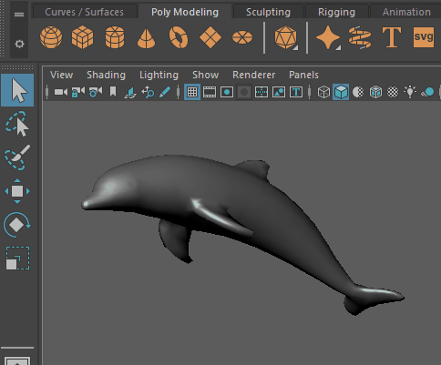

通用操纵器允许您以多种方式变换对象
打开“通用操纵器”(Universal Manipulator)工具
- 或者，按 Ctrl + T
“通用操纵器”(Universal Manipulator)是一个集成式工具，它将“移动工具”(Move Tool)、“旋转工具”(Rotate Tool)和“缩放工具”(Scale Tool)的功能组合在一起。还可以输入精确的值，直接在场景视图中缩放和旋转对象。
退出“通用操纵器”(Universal Manipulator)
选择任何其他工具。
打开“通用操纵器”(Universal Manipulator)选项以自定义操纵器的行为方式。
通用操纵器选项
当“通用操纵器”(Universal Manipulator)处于活动状态时 ()，可以在工具设置(Tool Settings)中设置下列选项。
访问“通用操纵器”(Universal Manipulator)选项
- >

变换空间(Transform Space)
- 局部(Local)
-
通用操纵器遵循对象的轴。
- 世界(World)
-
通用操纵器遵循世界空间轴。
旋转围绕(Rotate Around)
- 中心(Center)
-
绕对象的中心旋转。
- 轴点(Pivot)
-
绕枢轴点旋转。将枢轴点移离对象中心以查看此效果。有关详细信息，请参见更改枢轴点。